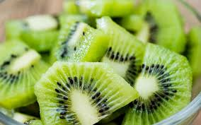

We simply can’t get enough floral photography, but we also love to read beautiful poetry and prose about flowers and nature. In just a few powerful words, our mind creates its own image and invigorates our senses, whisking us away to that endless flower field or basking in the sun with our hands in the garden.
There’s just something so intimate about letting our imaginations run freely after diving into a poem, so we wanted to share our favorite flower poetry with you. Hopefully, these beautiful words inspire your own imaginations and possibly a poem of your own!
Beauty in nature
Flower blooms so succulent
Hummingbirds flutter
-Carol Brown
One little flower
Nods in the delicate breeze
As the crickets hum
-Jeanine DeJesus.

We simply can’t get enough floral photography, but we also love to read beautiful poetry and prose about flowers and nature. In just a few powerful words, our mind creates its own image and invigorates our senses, whisking us away to that endless flower field or basking in the sun with our hands in the garden.
There’s just something so intimate about letting our imaginations run freely after diving into a poem, so we wanted to share our favorite flower poetry with you. Hopefully, these beautiful words inspire your own imaginations and possibly a poem of your own!
Beauty in nature
Flower blooms so succulent
Hummingbirds flutter
-Carol Brown
One little flower
Nods in the delicate breeze
As the crickets hum
-Jeanine DeJesus The flower is
the stem’s cry of beauty
to the universe.
-Vassilis Comporozos
What’s in a name? that which we call a rose
By any other name would smell as sweet.
-Excerpt from Romeo and Juliet (2.2.45-7)
“This old world that we’re livin’ in
Is might hard to beat.
You get a thorn with every Rose
But – ain’t the roses sweet?”
-Frank star